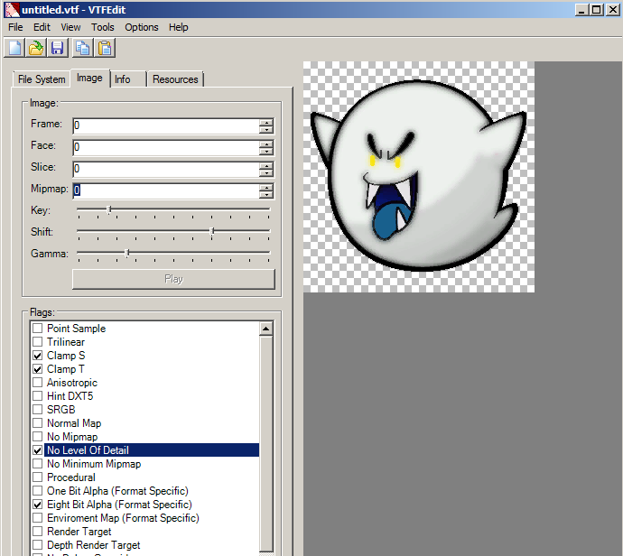
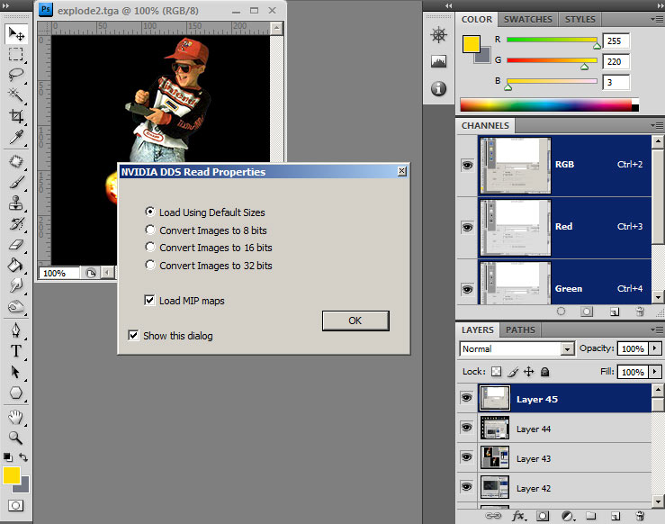
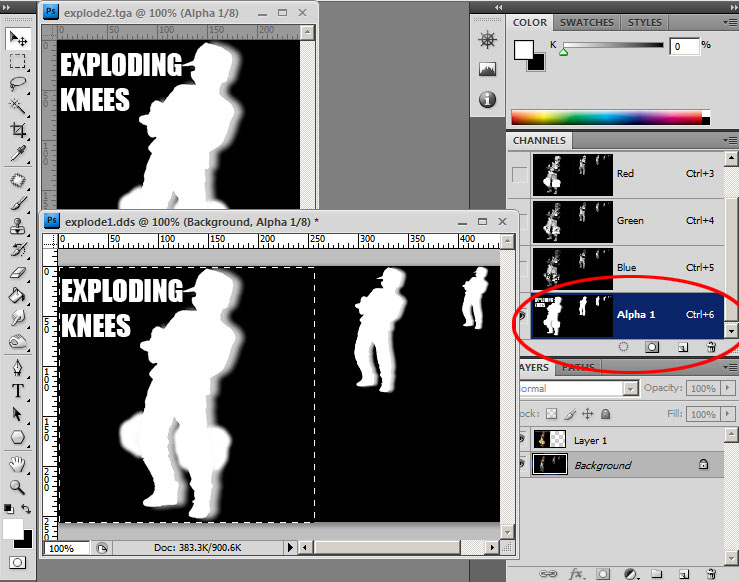
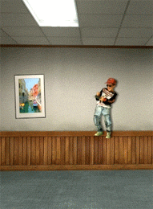

Tutorial 4: Creating a Fading Spray
Fading sprays use altered or invisible mipmaps to give a fading effect when you move closer or further away. There are 2 methods to achieve this effect: First is just changing a mipmap setting, and another is manually editing the mipmaps.

For the first method, import your finished image and select mipmap Sharpen filter: Darker.

Apply the flags: Clamp S, Clamp T and No Level Of Detail.
As you can see with the mipmap preview set to 1 we have total transparency. Set it back to 0, and save it to your spraylogo directory.
In the spraylogo selection menu it will be invisible. Don't panic, this is normal since the preview uses the smaller mipmap images.
Now this is the spray in action!
Mipmap Edited Method
Editing mipmaps of a spraylogo is a much more time consuming process but you can make some pretty interesting results. But first off you are going to need 2 things:

Load up 2 finished TGA's that you want to have fade between eachother.
Save the image you want to be the image that is displayed at FAR distance as a .DDS file.
You will be presented with this DDS creation window. First, set the format to "8.8.8.8 ARGB 32 bpp | unsigned". This is an uncompressed format we will use for now because we don't want to compress this to DXT5 until the last step. Check the "Generate mipmaps" bullet. Now if you like to do some mipmap enhancement; you can do it in this window just like we did in VTFEdit in the 1st & 2nd tutorial. To do this click "Sharpening..." and set your sharpening settings and hit okay.
The great thing about this Plugin is that you can have an active preview of what your mipmaps are gonna look like by clicking the Preview button. This way you can go back and adjust your sharpening settings before you export. If you are making a 512X512 resolution image, this can be even more useful.

Once saved as .dds CLOSE it from photoshop, and then open it. When you open it you will get this dialog box. Check the "Load MIP maps" box.
Now the DDS image is open complete with all the mipmaps.
Go to your second image and select all and copy. Paste it into the DDS document and align it to the left as so (This should be easy if you have "snap to document bounds" enabled in your view menu).

Now in the open tga, select the Alpha channel from your channels menu and do the same for your .DDS file. With both documents displaying alpha channels do the same copy and paste procedure.
Close your TGA file, then go to your .DDS document click the RGB channel or layers menu to get out of Alpha channel mode. Go to layers and flatten the image.
Save your DDS file and you will get the same DDS window as before but now change the format to "DXT5 ARGB 8bpp | interpolated alpha" and check "Use Existing MIP maps". Go to the Sharpening settings and select "None" or else your existing mipmaps will be sharpened again, and that can lead to ugly oversharpening results.
Now we will open "Quick and Dirty Bloodlines Tools" and select the "Texture Tools" tab. Open your DDS and hit "Convert DDS to VTF". The reason why we are using this tool is because so far, this is the only tool that converts DDS to VTF while preserving saved mipmaps (VTFEdit re-makes mipmaps when converting).
Now after Bloodlines Tools has saved a VTF file, open it in VTFEdit. Using VTFedit we set our image flags: Clamp S, Clamp T & No Level Of Detail.
If all went well, preview the mipmap in VTFEdit like so. As you can see the image changes from mipmap 0 to 1. Set the mipmap back to 0 and save it to your spraylogo directory.

The final Fading result.
Another thing you can do is edit more than one of the mipmaps like so: